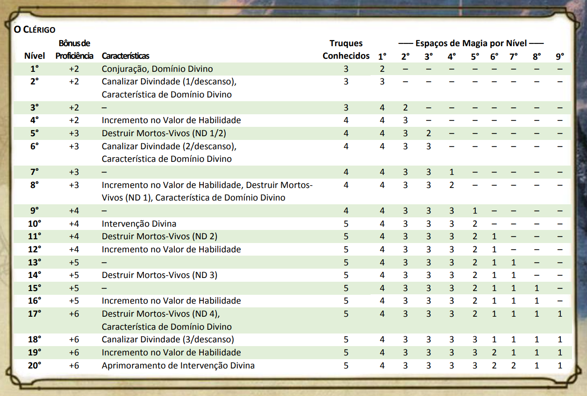
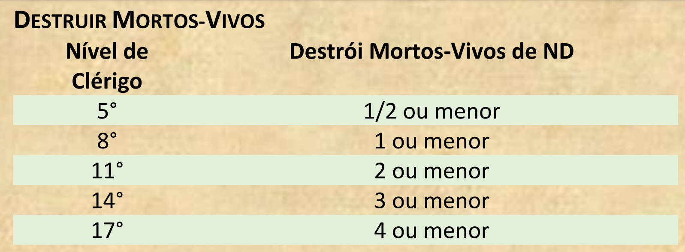

CARACTERiSTICAS DE CLASSE
Como um clérigo, você adquire as seguintes características de classe.
Dado de Vida: 1d8 por nível de clérigo
Pontos de Vida no 1° Nível: 8 + seu modificador de Constituição
Pontos de Vida nos Níveis Seguintes: 1d8 (ou 5) + seu modificador de Constituição por nível de clérigo após o 1°
Armaduras: Armaduras leves, armaduras médias, escudos
Armas: Todas as armas simples
Ferramentas: Nenhuma
Testes de Resistência: Sabedoria, Carisma
Perícias: Escolha duas dentre História, Intuição, Medicina, Persuasão e Religião
(a) uma maça ou (b) um martelo de guerra (se for proficiente)
(a) brunea, (b) armadura de couro ou (c) cota de malha (se for proficiente)
(a) um besta leve e 20 virotes ou (b) qualquer arma simples
(a) um pacote de sacerdote ou (b) um pacote de aventureiro
Um escudo e um símbolo sagrado
Você prepara a lista de magias disponíveis selecionando-as da lista de magias de clérigo. Você seleciona um número de magias igual ao seu modificador de Sabedoria + seu nível de clérigo (mínimo de uma magia). Essas magias devem ser de níveis que você possua espaços de magia.
Por exemplo, se você é um clérigo de 3º nível, você possui quatro espaços de magia de 1º nível e dois de 2º nível. Com Sabedoria 16, sua lista de magias preparadas pode incluir 6 magias, combinando as de 1º e 2º nível em qualquer ordem.
Se você preparar a magia de 1º nível curar ferimentos, você pode conjurá-la com um espaço de magia de 1º ou de 2º nível. Ao conjurar a magia, você não a retira de sua lista de magias preparadas, podendo conjurá-la de novo se tiver espaços de magia disponíveis.
Você pode modificar a sua lista de magias preparadas quando termina um descanso longo. Preparar uma nova lista de magias de clérigo requer tempo gasto em preces e meditação: no mínimo 1 minuto por nível de magia para cada magia preparada.
Além disso, você usa o seu modificador de Sabedoria para definir a CD dos testes de resistência para as magias de clérigo que você conjura e quando você realiza uma jogada de ataque com uma magia.
CD para suas magias = 8 + bônus de proficiência + seu modificador de Sabedoria
Modificador de ataque de magia = seu bônus de proficiência + seu modificador de Sabedoria
Ela também concede a você outras formas de utilizar seu Canalizar Divindade quando você ganhá-lo no 2º nível, bem como outros benefícios no 6º, 8º e 17º níveis.
Se você tem uma magia de domínio que não aparece na lista de magias de clérigo, mesmo assim ela é uma magia de clérigo para você.
Quando você usar seu Canalizar Divindade, você escolhe qual efeito quer criar. Você precisa terminar um descanso curto ou longo para usar a característica de novo. Alguns efeitos requerem teste de resistência. Quando você usar um desses efeitos, a CD é igual a das suas magias de clérigo.
A partir do 6º nível, você pode Canalizar Divindade duas vezes entre descansos e a partir do 18º nível, três vezes. Você recupera os usos dessa característica quando termina um descanso curto ou longo.
Uma criatura expulsa deve usar seu turno para fugir da melhor forma possível e de forma alguma pode aproximar-se a mais de 9 metros de você por vontade própria.
Ela também não pode usar reações. Como uma ação, a criatura pode apenas realizar uma Disparada ou tentar escapar de um efeito que a impeça de se mover. Se não há lugar para ir, a criatura pode usar a ação Esquivar.
Como padrão, você não pode elevar um valor de habilidade acima de 20 com essa característica.

Se o resultado for menor ou igual ao seu nível de clérigo, sua divindade intervém. O Mestre escolhe a natureza da intervenção. O efeito de qualquer magia de clérigo ou magia de domínio é apropriado como resultado.
Se sua divindade intervir, você fica impedido de usar essa característica de novo por 7 dias. Do contrário, você pode usá-la de novo após terminar um descanso longo. No 20º nível, seus pedidos de intervenção funcionam automaticamente, sem necessidade de rolagem de dados.
PONTOS DE VIDA
Dado de Vida: 1d8 por nível de clérigo
Pontos de Vida no 1° Nível: 8 + seu modificador de Constituição
Pontos de Vida nos Níveis Seguintes: 1d8 (ou 5) + seu modificador de Constituição por nível de clérigo após o 1°
PROFICIÊNCIAS
Armaduras: Armaduras leves, armaduras médias, escudos
Armas: Todas as armas simples
Ferramentas: Nenhuma
Testes de Resistência: Sabedoria, Carisma
Perícias: Escolha duas dentre História, Intuição, Medicina, Persuasão e Religião
EQUIPAMENTO
Você começa com o seguinte equipamento, além do equipamento concedido pelo seu antecedente:(a) uma maça ou (b) um martelo de guerra (se for proficiente)
(a) brunea, (b) armadura de couro ou (c) cota de malha (se for proficiente)
(a) um besta leve e 20 virotes ou (b) qualquer arma simples
(a) um pacote de sacerdote ou (b) um pacote de aventureiro
Um escudo e um símbolo sagrado
CONJURAÇÃO
Como um canalizador de poder divino, você pode conjurar magias de clérigo. Veja o capítulo 10 para as regras gerais de conjuração e o capítulo 11 para a lista de magias de clérigo.TRUQUES
Você conhece três truques, à sua escolha, da lista de magias de clérigo. Você aprende truques de clérigo adicionais, à sua escolha, em níveis mais altos, como mostrado na coluna Truques Conhecidos da tabela O Clérigo.PREPARANDO E CONJURANDO MAGIAS
A tabela O Clérigo mostra quantos espaços de magia você têm para conjurar suas magias de 1º nível e superiores. Para conjurar uma dessas magias, você precisa gastar um espaço do nível da magia ou superior. Você recupera todos os espaços gastos quando termina um descanso longo.Você prepara a lista de magias disponíveis selecionando-as da lista de magias de clérigo. Você seleciona um número de magias igual ao seu modificador de Sabedoria + seu nível de clérigo (mínimo de uma magia). Essas magias devem ser de níveis que você possua espaços de magia.
Por exemplo, se você é um clérigo de 3º nível, você possui quatro espaços de magia de 1º nível e dois de 2º nível. Com Sabedoria 16, sua lista de magias preparadas pode incluir 6 magias, combinando as de 1º e 2º nível em qualquer ordem.
Se você preparar a magia de 1º nível curar ferimentos, você pode conjurá-la com um espaço de magia de 1º ou de 2º nível. Ao conjurar a magia, você não a retira de sua lista de magias preparadas, podendo conjurá-la de novo se tiver espaços de magia disponíveis.
Você pode modificar a sua lista de magias preparadas quando termina um descanso longo. Preparar uma nova lista de magias de clérigo requer tempo gasto em preces e meditação: no mínimo 1 minuto por nível de magia para cada magia preparada.
HABILIDADE DE CONJURAÇÃO
Sabedoria é a sua habilidade para você conjurar suas magias de clérigo. O poder de suas magias vem da devoção que você tem ao seu deus. Você usa sua Sabedoria sempre que alguma magia se referir a sua habilidade de conjurar magias.Além disso, você usa o seu modificador de Sabedoria para definir a CD dos testes de resistência para as magias de clérigo que você conjura e quando você realiza uma jogada de ataque com uma magia.
CD para suas magias = 8 + bônus de proficiência + seu modificador de Sabedoria
Modificador de ataque de magia = seu bônus de proficiência + seu modificador de Sabedoria
CONJURAÇÃO DE RITUAL
Você pode conjurar qualquer magia de druida que você conheça como um ritual se ela possuir o descritor ritual.FOCO DE CONJURAÇÃO
Você pode usar um símbolo sagrado como foco de conjuração das suas magias de clérigo.DOMÍNIO DIVINO
Escolha um domínio relacionado à sua divindade: Conhecimento, Enganação, Guerra, Luz, Natureza, Tempestade ou Vida. Cada domínio é detalhado ao final da descrição da classe e, cada um, fornece exemplos dos deuses associados a eles. Essa escolha, realizada no 1º nível, concede magias de domínio e outras características.Ela também concede a você outras formas de utilizar seu Canalizar Divindade quando você ganhá-lo no 2º nível, bem como outros benefícios no 6º, 8º e 17º níveis.
MAGIAS DE DOMÍNIO
Cada domínio tem uma lista de magias – as magias de domínio – que você adquire nos níveis especificados pelo seu domínio. Quando você ganha uma magia de domínio, você sempre a tem preparada, e essa magia não conta no número de magias que você pode preparar a cada dia.Se você tem uma magia de domínio que não aparece na lista de magias de clérigo, mesmo assim ela é uma magia de clérigo para você.
CANALIZAR DIVINDADE
No 2º nível, você se torna capaz de canalizar energia diretamente de sua divindade, utilizando-a como combustível para efeitos mágicos. Você começa com dois efeitos: Expulsar Mortos-vivos e um efeito determinado pelo seu domínio. Alguns domínios conferem efeitos adicionais conforme você avança de nível, como consta na descrição de cada domínio.Quando você usar seu Canalizar Divindade, você escolhe qual efeito quer criar. Você precisa terminar um descanso curto ou longo para usar a característica de novo. Alguns efeitos requerem teste de resistência. Quando você usar um desses efeitos, a CD é igual a das suas magias de clérigo.
A partir do 6º nível, você pode Canalizar Divindade duas vezes entre descansos e a partir do 18º nível, três vezes. Você recupera os usos dessa característica quando termina um descanso curto ou longo.
CANALIZAR DIVINDADE: EXPULSAR MORTOS-VIVOS
Usando uma ação, você levanta seu símbolo sagrado e murmura uma prece repreendendo os mortos-vivos. Cada morto-vivo que puder ver ou ouvir você em um raio de 9 metros a partir de você, deve fazer um teste de resistência de Sabedoria. Se falhar, a criatura está expulsa por 1 minuto ou até sofrer algum dano.Uma criatura expulsa deve usar seu turno para fugir da melhor forma possível e de forma alguma pode aproximar-se a mais de 9 metros de você por vontade própria.
Ela também não pode usar reações. Como uma ação, a criatura pode apenas realizar uma Disparada ou tentar escapar de um efeito que a impeça de se mover. Se não há lugar para ir, a criatura pode usar a ação Esquivar.
INCREMENTO NO VALOR DE HABILIDADE
Quando você atinge o 4° nível e novamente no 8°, 12°, 16° e 19° nível, você pode aumentar um valor de habilidade, à sua escolha, em 2 ou você pode aumentar dois valores de habilidade, à sua escolha, em 1.Como padrão, você não pode elevar um valor de habilidade acima de 20 com essa característica.
DESTRUIR MORTOS-VIVOS
A partir do 5º nível, quando um morto-vivo falhar no teste de resistência contra a sua característica Expulsar Mortos-vivos, ele é instantaneamente destruído se o Nível de Desafio dele for menor ou igual ao valor da tabela Destruir Mortos-vivos, de acordo com seu nível de clérigo.DESTRUIR MORTOS-VIVOS
INTERVENÇÃO DIVINA
A partir do 10º nível, você pode rogar à sua divindade para que auxilie você em uma árdua tarefa. Implorar pelo auxílio requer uma ação. Você precisa descrever o que busca e realizar uma rolagem de dado de percentagem.Se o resultado for menor ou igual ao seu nível de clérigo, sua divindade intervém. O Mestre escolhe a natureza da intervenção. O efeito de qualquer magia de clérigo ou magia de domínio é apropriado como resultado.
Se sua divindade intervir, você fica impedido de usar essa característica de novo por 7 dias. Do contrário, você pode usá-la de novo após terminar um descanso longo. No 20º nível, seus pedidos de intervenção funcionam automaticamente, sem necessidade de rolagem de dados.
RECURSOS DE CLASSE OPCIONAIS
Você ganha características de classe no Livro do Jogador quando atinge certos níveis em sua classe. Esta
seção oferece recursos adicionais que você pode obter como clérigo. Ao contrário dos recursos do Livro
do Jogador, você não obtém os recursos aqui automaticamente.
Consultando seu mestre, você decide se deseja obter um recurso nesta seção se você atender ao requisito de nível observado na descrição do recurso. Esses recursos podem ser selecionados separadamente um do outro; você pode usar alguns, todos ou nenhum deles.
Se você escolher um recurso que substitui outro recurso, não obterá nenhum benefício do substituído e não se qualificará para nada no jogo que o exija.
Você pode usar seu Canalilzar Divindade para alimentar seus feitiços. Como uma ação bônus, você toca seu símbolo sagrado, profere uma oração e recupera um espaço de feitiço gasto, o nível do qual não pode ser superior a metade do seu bônus de proficiência (arredondado para cima).
O número de vezes que você pode usar este recurso é baseado no nível que você alcançou nesta classe: 2º nível, uma vez; 6º nível, duas vezes; e 18º nível, três vezes. Você recupera todos os usos despendidos quando termina um longo descanso.
Sempre que você atingir um nível nesta classe que conceda o recurso de Melhoria de Pontuação de Habilidade, você pode substituir um cantrip que você aprendeu com o recurso Conjuração de feitiços desta classe por outro cantrip da lista de magias do clérigo.
Você é abençoado com poder divino na batalha. Quando uma criatura sofre dano de um de seus ataques de arma de fogo ou arma, você também pode causar 1d8 de dano radiante àquela criatura. Depois de causar esse dano, você não pode usar esse recurso novamente até o início de seu próximo turno.
Consultando seu mestre, você decide se deseja obter um recurso nesta seção se você atender ao requisito de nível observado na descrição do recurso. Esses recursos podem ser selecionados separadamente um do outro; você pode usar alguns, todos ou nenhum deles.
Se você escolher um recurso que substitui outro recurso, não obterá nenhum benefício do substituído e não se qualificará para nada no jogo que o exija.
HARNESS DIVINE POWER
Recurso de clérigo de 2º nívelVocê pode usar seu Canalilzar Divindade para alimentar seus feitiços. Como uma ação bônus, você toca seu símbolo sagrado, profere uma oração e recupera um espaço de feitiço gasto, o nível do qual não pode ser superior a metade do seu bônus de proficiência (arredondado para cima).
O número de vezes que você pode usar este recurso é baseado no nível que você alcançou nesta classe: 2º nível, uma vez; 6º nível, duas vezes; e 18º nível, três vezes. Você recupera todos os usos despendidos quando termina um longo descanso.
CANTRIP VERSATILITY
Recurso de clérigo de 4º nívelSempre que você atingir um nível nesta classe que conceda o recurso de Melhoria de Pontuação de Habilidade, você pode substituir um cantrip que você aprendeu com o recurso Conjuração de feitiços desta classe por outro cantrip da lista de magias do clérigo.
BEM-AVENTURADOS
Recurso de clérigo de 8º nível, que substitui o recurso Golpe Divino ou Lançamento de Feitiço Potente.Você é abençoado com poder divino na batalha. Quando uma criatura sofre dano de um de seus ataques de arma de fogo ou arma, você também pode causar 1d8 de dano radiante àquela criatura. Depois de causar esse dano, você não pode usar esse recurso novamente até o início de seu próximo turno.
LISTA DE SUBCLASSES
DOMÍNIO DA FORJA
DOMÍNIO DA SEPULTURA
DOMÍNIO DO CONHECIMENTO
DOMÍNIO DA ENGANAÇÃO
DOMÍNIO DA GUERRA
DOMÍNIO DA LUZ
DOMÍNIO DA NATUREZA
DOMÍNIO DA TEMPESTADE
DOMÍNIO DA VIDA
DOMINIO ARCANO
ORDER DOMAIN
PEACE DOMAIN
TWILIGHT DOMAIN
DOMÍNIO DA MORTE
DOMÍNIO DA FORJA
Os clérigos dessas divindades procuram objetos perdidos pelas forças da escuridão, liberam as minas invadidas pelos minérios e descobrem materiais raros e maravilhosos necessários para criar potentes itens mágicos.
Os seguidores desses deuses orgulham-se de seu trabalho e estão dispostos a criar e usar armaduras pesadas e armas poderosas para protegê-los. As divindades deste domínio incluem Gond, Reorx, Onatar, Moradin, Hephaestus e Goibhniu.
MAGIAS DE DOMÍNIO
Você ganha magias de domínio nos níveis de clérigo listados na tabela de Magias do Domínio da Forja. Veja a caracteristica de classe Domínio Divino para ver como magias de domínio funcionam.MAGIAS DO DOMINIO DA FORJA
PROFICIÊNCIA BÔNUS
Quando escolhe esse domínio no 1 ° nível, você ganha proficiência com armadura pesada e ferramentas de ferreiro.BENÇÃO DA FORJA
No 1 ° Nível, você ganha a habilidade de imbuir magica em uma arma ou armadura. No fim de um descanso longo, pode tocar um objeto não mágico que seja uma armadura ou uma arma simples ou marcial.Até o fim do seu próximo descanso longo ou até você morrer, o objeto se toma um item mágico, garantindo um bônus de + 1 para sua CA se for uma armadura ou + 1 de bônus nas rolagens de ataque e dano dessa arma.Uma vez utilizado essa característica, não pode usá-la novamente até terminar um descanso longo.
CANALIZAR DIVINDADE: BENÇÃO DO ARTESÃO
Começando no 2° nível, você pode usar seu Canalizar Divindade para criar itens simples. Você conduz um ritual de uma hora de duração que cria um item não mágico que precisa incluir algum metal:Uma arma simples ou marcial, uma armadura, 1 O peças de munição, um conjunto de ferramentas ou outro objeto metálico (ver capítulo 5, "Equipamento", no Livro do Jogador, para exemplo desses itens).
A criação é completada no final da hora, aglutinando-se em um espaço desocupado da sua escolha em uma superficie dentro de 1,5 metros de você. O que você criar não pode valer mais do que 100 po.
Como parte desse ritual, você precisa dispor de metal, cujo pode incluir moedas, com o valor igual à criação. O metal irreversivelmente une-se e se transforma na sua criação no fim do ritual, magicamente formando até partes não metais da criação.
O ritual pode criar uma duplicata de um item não mágico que contem metal, como uma chave, se você possuir o original durante o ritual.
ALMA DA FORJA
Começando no 6° nível, sua maestria em forja garante habilidades especiais: Você ganha resistência a dano de fogo.Enquanto vestindo armadura pesada, você ganha + 1 de bônus em CA.
IMPACTO DIVINO
No 8° nível, você ganha a habilidade de infundir seus ataques com armas com o poder incandescente da forja.Uma vez por turno, quando acertar uma criatura com um ataque com arma, pode fazer o ataque causar um dano extra de 1d8 de dano de fogo. Ao alcançar o 14° nível, o dano é aumentado para 2d8.
SANTO DA FORJA E FOGO
No 17° nível, você é abençoado com afinidade ao fogo e metal e se toma mais poderoso: Você ganha imunidade a dano de fogo.Enquanto vestindo armadura pesada, você tem resistência a dano cortante, concussão e perfurante de ataques não mágicos.
DOMÍNIO DA SEPULTURA
As divindades da sepultura incluem Kelemvor, Wee Jas, os Espíritos Ancestrais da Corte Divina, Hades, Anubis e Osiris. Os seguidores dessas divindades procuram colocar os espíritos errantes para descansar, destruir os mortos-vivos e aliviar o sofrimento dos moribundos.
Sua magia também permite que eles adiem a morte por um tempo. Particularmente para uma pessoa que ainda tem um grande trabalho para realizar no mundo. Este é um atraso da morte, não uma negação, pois a morte acabará por ser entregue.
MAGIAS DE DOMÍNIO
Você ganha magias de domínio nos níveis de clérigo listados na tabela de Magias do Domínio da Sepultura. Veja a característica de classe Domínio Divino para ver como as magias de domínio funcionam.MAGIAS DO DOMÍNIO DA SEPULTURA
CÍRCULO DA MORTALIDADE
No 1 ° Nível, você ganha a habilidade de manipular a linha entre vida e morte. Quando você normalmente rolaria um ou mais dados parar restaurar os pontos de vida de uma criatura a O pontos de vida com uma magia, pode usar os maiores valores possíveis de cada dado.Em adição, você aprende o truque estabilizar, cujo não conta no número de truques de clérigo que conhece. Para você, ela tem 9 metros de alcance, e pode conjurá-la como uma ação bônus.
OLHOS DA SEPULTURA
No 1 ° Nível, você ganha a habilidade de ocasionalmente sentir a presença de dos mortos-vivos, cuja existência é um insulto ao ciclo natural da vida. Como uma ação, pode abrir sua consciência para detectar magicamente os mortos-vivos.Até o final da sua próxima rodada, conhece a localização de qualquer morto-vivo dentro de 18 metros que não esteja atrás de cobertura total e que não esteja protegido contra magias de adivinhação.
Esse sentido não diz nada sobre as capacidades ou a identidade de uma criatura.
Você pode usar essa característica um número de vezes igual ao seu modificador de Sabedoria (mínimo de uma vez).
Você recupera todos os usos gastos quando termina um descanso longo.
CANALIZAR DIVINDADE: CAMINHO DA SEPULTURA
Começando no 2° Nível, você pode usar seu Canalizar Divindade para marcar a terminação da vida de outra criatura.Como uma ação, você escolhe uma criatura que possa ver dentro de 9 metros, amaldiçoando-a até o final da próxima rodada. Da próxima vez que você ou um aliado atingir a criatura amaldiçoada com um ataque, a criatura tem vulnerabilidade a todos os danos desse ataque, e então a maldição termina.
SENTINELA NA PORTA DA MORTE
No 6° Nível, você ganha a habilidade de impedir o progresso da morte. Como uma reação quando você ou uma criatura que possa ver dentro de 9 metros sofrem um acerto crítico, você pode transformar esse acerto em um acerto normal.Todos os efeitos desencadeados por um acerto critico são cancelados. Você pode usar essa característica um número de vezes igual ao seu modificador de Sabedoria (mínimo de uma vez).
Você recupera todos os usos gastos quando você termina um descanso longo.
CONJURAÇÃO POTENTE
Começando no 8° Nível, você adiciona seu modificador de Sabedoria ao dano causado com qualquer truque.GUARDIÃO DAS ALMAS
A partir do 17° nivel. Você pode aproveitar um vestígio de vitalidade de uma alma em despedida e usá-la para curar os vivos. Quando um inimigo que possa ver morre a menos de 18 metros, você ou uma criatura da sua escolha que esteja a menos de 18 metros de você recupera pontos de vida iguais ao número de dados de vida do inimigo.Você pode usar essa característica somente se você não estiver irJ.capacitado. Depois de usá-lo, não pode fazê-lo novamente até o início do seu próximo turno.
DOMÍNIO DO CONHECIMENTO
Algumas divindades escondem conhecimentos e os mantem em segredo para si mesmos. E outros prometem a seus seguidores que eles ganharão poderes tremendos se desvendarem os segredos do multiverso.
Os seguidores desses deuses estudam conhecimento exotérico, coletam tomos antigos, escavam locais secretos da terra e aprendem tudo que podem.
Alguns deuses do conhecimento que promovem a prática de ofícios e criação incluem deuses da forja como Gond, Reorx, Onatar, Moradin, Hefesto e Goibhniu.
MAGIAS DO DOMÍNIO DO CONHECIMENTO
BÊNÇÃOS DO CONHECIMENTO
No 1° nível, você aprende dois idiomas, à sua escolha. Você também se torna proficiente em duas perícias, à sua escolha, dentre as seguintes: Arcanismo, História, Natureza ou Religião.Seu bônus de proficiência é dobrado em qualquer teste de habilidade que você fizer usando qualquer dessas perícias.
CANALIZAR DIVINDADE: CONHECIMENTO DAS ERAS
A partir do 2° nível, você pode usar seu Canalizar Divindade para beber da fonte divina do conhecimento.Com uma ação, você escolhe uma perícia ou ferramenta. Por 10 minutos, você terá proficiência com a perícia ou ferramenta escolhida.
CANALIZAR DIVINDADE: LER PENSAMENTOS
No 6° nível, você pode usar seu Canalizar Divindade para ler a mente de uma criatura. Você pode, então, usar seu acesso a mente da criatura para comandá-la.Com uma ação, escolha uma criatura que você possa ver que esteja a até 18 metros de você. Essa criatura deve realizar um teste de resistência de Sabedoria, se for bem sucedida nesse teste, você não poderá usar essa característica contra ela novamente até terminar um descanso longo.
Se a criatura falhar no teste, você pode ler seus pensamentos superficiais (aqueles mais atuais, que refletem suas emoções e no que você está pensando constantemente) quando estiver a até 18 metros de você. Esse efeito dura por 1 minuto.
Durante esse tempo, você pode usar sua ação para terminar esse efeito e conjurar a magia sugestão na criatura sem gastar um espaço de magia. O alvo falha automaticamente no teste de resistência contra essa magia.
CONJURAÇÃO PODEROSA
A partir do 8° nível, você adiciona seu modificador de Sabedoria no dano causado por qualquer truque de clérigo.VISÕES DO PASSADO
A partir do 17° nível, você pode convocar visões do passado relacionadas a um objeto que você esteja segurando ou sobre o ambiente ao seu redor. Você gasta pelo menos 1 minuto meditando e rezando, então, recebe oníricos vislumbres turvos dos eventos recentes.Você pode meditar dessa maneira por um número de minutos igual ao seu valor de Sabedoria e deve manter a concentração durante esse tempo, como se você estivesse conjurando uma magia.
Quando você usa essa característica, você não pode usá-la novamente até terminar um descanso curto ou longo.
- Leitura de Objeto. Ao segurar um objeto enquanto medita, você pode ter visões do dono anterior do objeto. Depois de meditar por 1 minuto, você descobre como o antigo dono adquiriu e perdeu o objeto, assim como o evento recente mais significativo envolvendo o objeto e seu dono.
Se o objeto foi portado por outra criatura num passado recente (dentro de um número de dias igual ao seu valor de Sabedoria), você pode gastar 1 minuto adicional, por cada dono, para descobrir as mesmas informações sobre essa criatura.
- Leitura Local. À medida que você medita, você tem visões dos eventos recentes nas suas vizinhanças próximas (uma sala, rua, túnel, clareira, ou similar, de até 15 metros cúbicos), voltando um número de dias igual ao seu valor de Sabedoria.
Para cada minuto que você meditar, você descobre sobre um evento significativo, a partir dos mais recentes. Eventos significativos, normalmente envolvem emoções fortes, como batalhas e traições, casamentos e assassinatos, nascimentos e funerais.
No entanto, também podem incluir eventos mais mundanos, que podem ser, no entanto, relevantes na sua situação atual.
DOMÍNIO DA ENGANAÇÃO

Eles são patronos dos ladrões, trapaceiros, apostadores, rebeldes e libertadores. Seus clérigos são uma força intrometida no mundo, ferindo orgulhos, zombando de tiranos, roubando dos ricos, libertando cativos e desrespeitando tradições vazias. Eles preferem subterfúgio, trapaças, enganação e rouba no lugar do confronto direto.
MAGIAS DO DOMÍNIO DA ENGANAÇÃO
BÊNÇÃO DO TRAPACEIRO
A partir do momento em que você escolhe esse domínio, no 1° nível, você pode usar sua ação para tocar uma criatura voluntária além de você mesmo para conceder vantagem em testes de Destreza (Furtividade).Essa bênção dura por 1 hora ou até você usar essa característica novamente.
CANALIZAR DIVINDADE: INVOCAR DUPLICIDADE
A partir do 2° nível, você pode usar seu Canalizar Divindade para criar uma duplicada ilusória de si mesmo.Com uma ação, você cria uma ilusão perfeita de si mesmo que dura por 1 minuto ou até você perder sua concentração (como se você estivesse se concentrando em uma magia).
A ilusão aparece em um espaço desocupado que você possa ver a até 9 metros de você. Com uma ação bônus, no seu turno, você pode mover a ilusão até 9 metros para um espaço que você possa ver, mas ela deve permanecer a até 36 metros de você.
Pela duração, você pode conjurar magias como se você estivesse no espaço ocupado pela ilusão, mas você deve usar seus próprios sentidos.
Além disso, quando ambos você e sua ilusão estiverem a 1,5 metro de uma criatura que possa ver a ilusão, você tem vantagem nas jogadas de ataque contra essa criatura, devido a distração causada no alvo pela ilusão.
CANALIZAR DIVINDADE: MANTO DE SOMBRAS
No 6° nível, você pode usar seu Canalizar Divindade para desaparecer. Com uma ação, você se torna invisível até o final do seu próximo turno. Você se torna visível se atacar ou conjurar uma magia.GOLPE DIVINO
No 8º nível, você ganha a habilidade de imbuir seus ataques com poder divino. Uma vez em cada um de seus turnos, quando você acertar uma criatura com um ataque com arma, você causa 1d8 de dano radiante adicional ao alvo. Quando alcançar o 14º nível, o dano extra aumenta para 2d8.DUPLICIDADE APRIMORADA
A partir do 17° nível, você pode criar até quatro duplicatas de você, ao invés de uma, quando usar Invocar Duplicidade. Com uma ação bônus, no seu turno, você pode mover quantas duplicadas quiser até 9 metros, até no máximo de 36 metros de distância.DOMÍNIO DA GUERRA

Os clérigos de tais deuses se sobressaem em batalha, inspirando os outros a lutar o bom combate ou oferecendo atos de violência como suas orações.
Entre os deuses da guerra estão inclusos campeões da honra e bravura (como Torm, Heironeous e Kir-Jolith) assim como deuses da destruição e pilhagem (como Erythnul, a Fúria, Gruumsh e Ares) e deuses da conquista e dominação (como Bane, Hextor e Maglubiyet).
Outros deuses da guerra (como Tempus, Nike e Nuada) tomam uma postura mais neutra, promovendo a guerra em todas as suas manifestações e apoiando os guerreiros em qualquer circunstâncias
MAGIAS DO DOMÍNIO DA GUERRA
PROFICIÊNCIA ADICIONAL
No 1° nível, você adquire proficiência em armas marciais e em armaduras pesadas.SACERDOTE DA GUERRA
A partir do 1° nível, seu deus envia rajadas de inspiração a você quando você está engajado em combate. Quando você usa a ação de Ataque, você pode realizar um ataque com arma, com uma ação bônus.Você pode usar essa característica um número de vezes igual ao seu modificador de Sabedoria (mínimo uma vez).
Você recupera todos os usos gastos após terminar um descanso longo.
CANALIZAR DIVINDADE: ATAQUE DIRIGIDO
A partir do 2° nível, você pode usar seu Canalizar Divindade para golpear com precisão sobrenatural.Quando você realiza uma jogada de ataque, você pode usar seu Canalizar Divindade para recebe +10 de bônus na jogada. Você realiza essa escolha depois de ver a rolagem, mas antes do Mestre dizer se o ataque atingiu ou errou.
CANALIZAR DIVINDADE:BÊNÇÃO DO DEUS DA GUERRA
No 6° nível, quando uma criatura a até 9 metros de você realizar uma jogada de ataque, você pode usar sua reação para conceder a criatura +10 de bônus nessa jogada, usando seu Canalizar Divindade.Você realiza essa escolha depois de ver a rolagem, mas antes do Mestre dizer se o ataque atingiu ou errou.
GOLPE DIVINO
No 8º nível, você ganha a habilidade de imbuir seus ataques com poder divino. Uma vez em cada um de seus turnos, quando você acertar uma criatura com um ataque com arma, você causa 1d8 de dano radiante adicional ao alvo. Quando alcançar o 14º nível, o dano extra aumenta para 2d8.AVATAR DA BATALHA
A partir do 17° nível, você ganha resistência a dano de concussão, cortante e perfurante de armas não-mágicas.DOMÍNIO DA LUZ
Alguns desses deuses são retratados como o próprio sol ou como um cocheiro que carrega o sol através do céu. Outros são sentinelas incansáveis cujos olhos penetram cada sombra e veem através de cada enganação.
Alguns são divindades da beleza e arte que ensinam que a arte é o veículo para o aprimoramento da alma. Clérigos de um deus da luz são almas esclarecidas infundidas com radiação e o poder divino da visão do discernimento, conhecidos por afastar as mentiras e incineras a escuridão.
MAGIAS DO DOMÍNIO DA LUZ
TRUQUE ADICIONAL
Quando você escolhe esse domínio no 1° nível, você ganha o truque luz se você ainda não o conhecia.LABAREDA PROTETORA
Também a partir do 1° nível, você pode interpor luz divina entre você e uma criatura atacante.Quando você for atacado por uma criatura a até 9 metros de você que você pode ver, você pode usar sua reação para impor desvantagem na jogada de ataque, causando labaredas de luz na frente do atacante antes dele atingir ou errar. Um atacante que não puder ser cegado é imune a essa característica.
Você pode usar essa característica um número de vezes igual ao seu modificador de Sabedoria (mínimo uma vez). Você recupera todos os usos gastos após terminar um descanso longo.
CANALIZAR DIVINDADE: RADIAÇÃO DO AMANHECER
A partir do 2° nível, você pode usar seu Canalizar Divindade para criar uma explosão de luz solar, banindo a escuridão e causando dano radiante aos inimigos.Com uma ação, você ergue seu símbolo sagrado e qualquer escuridão mágica num raio de 9 metros de você é dissipada. Além disso, cada criatura hostil a até 9 metros deve realizar um teste de resistência de Constituição.
Uma criatura sofre dano radiante igual a 2d10 + seu nível de clérigo se falhar no teste e metade desse dano caso seja bem sucedida. Uma criatura que tenha cobertura total contra você não é afetada.
LABAREDA APRIMORADA
No 6° nível, você também pode utilizar sua característica Labareda Protetora quando uma criatura que você possa ver a até 9 metros atacar outra criatura diferente de você.CONJURAÇÃO PODEROSA
A partir do 8° nível, você adiciona seu modificador de Sabedoria no dano causado por qualquer truque de clérigo.COROA DE LUZ
A partir do 17° nível, você pode usar sua ação para ativar uma aura de luz solar que dura por 1 minuto ou até você dissipá-la usando outra ação.Você emite luz plena num raio de 18 metros e penumbra a até 9 metros além disso. Os seus inimigos na área de luz plena tem desvantagem nos testes de resistência contra suas magias que causam dano de fogo ou dano radiante.
DOMÍNIO DA NATUREZA

Druidas reverenciam a natureza como um todo e podem vir a servir essas divindades, praticando ritos misteriosos e recitando orações a muito esquecidas em sua própria língua secreta.
Porém, muitos desses deuses também possuem clérigos, campeões que tem um papel mais ativo em promover os interesses particulares de um deus da natureza.
Esses clérigos devem caçar monstruosidades malignas que usurpam dos bosques, abençoar a colheita dos fieis ou murchar a cultura dos que irritarem seus deuses.
MAGIAS DO DOMÍNIO DA NATUREZA
ACÓLITO DA NATUREZA
No 1° nível, você aprende um truque de druida, à sua escolha. Você também ganha proficiência em uma das seguintes perícias, à sua escolha: Adestrar Animais, Natureza ou Sobrevivência.PROFICIÊNCIA ADICIONAL
Também a partir do 1° nível, você adquire proficiência com armaduras pesadas.CANALIZAR DIVINDADE:ENFEITIÇAR ANIMAIS E PLANTAS
A partir do 2° nível, você pode usar seu Canalizar Divindade para enfeitiçar animais e plantas.Com uma ação, você ergue seu símbolo sagrado e invoca o nome do seu deus. Cada besta ou criatura-planta que puder ver você num raio de 9 metros, deve realizar um teste de resistência de Sabedoria.
Se a criatura falhar, ela estará enfeitiçada por você durante 1 minuto ou até sofrer dano. Enquanto estiver enfeitiçada por você, ela será amistosa a você a as criaturas que você designar.
AMORTECER ELEMENTOS
No 6° nível, quando você ou uma criatura a até 9 metros de você sofrer dano de ácido, frio, fogo, elétrico ou trovão, você pode usar sua reação para conceder resistência a criatura contra aquele tipo de dano.GOLPE DIVINO
No 8º nível, você ganha a habilidade de imbuir seus ataques com poder divino. Uma vez em cada um de seus turnos, quando você acertar uma criatura com um ataque com arma, você causa 1d8 de dano radiante adicional ao alvo.Quando alcançar o 14º nível, o dano extra aumenta para 2d8.
SENHOR DA NATUREZA
A partir do 17° nível, você ganha a habilidade de comandar animais e criaturas-planta.Enquanto a criatura estiver enfeitiçada pela sua característica Enfeitiçar Animais e Plantas, você pode usar uma ação bônus no seu turno para dizer verbalmente o que cada uma dessas criaturas devem fazer no próximo turno delas.
DOMÍNIO DA TEMPESTADE
Em alguns panteões, um deus com esse domínio comanda os outros deuses e é conhecido pela justiça rápida levada através de relâmpagos. Nos panteões de povos marítimos e navegantes, deuses com esse domínio são divindades do oceano e patrono dos marinheiros.
Deuses da tempestade enviam seus clérigos para inspirar pavor no povo comum, tanto para mantê-los no caminho da justiça e coragem quanto para oferecer sacrifícios de propiciação para afastar a ira divina.
MAGIAS DO DOMÍNIO DA TEMPESTADE
PROFICIÊNCIA ADICIONAL
A partir do 1° nível, você adquire proficiência em armas marciais e armaduras pesadas.IRA DA TORMENTA
Também a partir do 1° nível, você pode repreender ataques violentamente. Quando uma criatura a 1,5 metro de você que você possa ver, atingir você com um ataque, você pode usar sua reação para forçar a criatura a realizar um teste de resistência de Destreza.A criatura sofre 2d8 de dano elétrico ou de trovão (à sua escolha) caso falhe no teste, e metade desse dano caso seja bem sucedido.
Você pode usar essa característica um número de vezes igual ao seu modificador de Sabedoria (mínimo uma vez).
Você recupera todos os usos gastos após terminar um descanso longo.
CANALIZAR DIVINDADE: IRA DESTRUIDORA
A partir do 2° nível, você pode usar seu Canalizar Divindade para empunhar o poder da tormenta com ferocidade desmedida.Quando você rolar dano elétrico ou de trovão, você pode usar seu Canalizar Divindade para causar o máximo de dano, ao invés de rolá-lo.
GOLPE DE RELAMPAGO
No 6° nível, quando você causa dano elétrico a uma criatura Grande ou menor, você também pode empurrá-la para até 3 metros de distância de você.GOLPE DIVINO
No 8º nível, você ganha a habilidade de imbuir seus ataques com poder divino. Uma vez em cada um de seus turnos, quando você acertar uma criatura com um ataque com arma, você causa 1d8 de dano radiante adicional ao alvo.quando alcançar o 14º nível, o dano extra aumenta para 2d8.
FILHO DA TORMENTAM
A partir do 17° nível, você adquire deslocamento de voo igual a seu deslocamento de caminhada contanto que você não esteja no subterrâneo ou em local fechado.DOMÍNIO DA VIDA

Quase toda divindade não maligna pode alegar influência sobre esse domínio. Em particular divindades da agricultura (como Chauntea, Arawai e Demeter), do sol (como Lathander, Pelor e Re-Horakhty), da cura ou resistência (como Ilmater, Mishakal, Apolo e Diancecht), e do lar e comunidade (como Hestia, Hathor e Boldrei).
MAGIAS DO DOMÍNIO DA VIDA
PROFICIÊNCIA ADICIONAL
Quando você escolhe este domínio no 1º nível, você ganha proficiência com armaduras pesadas.DISCÍPULO DA VIDA
Também no 1º nível, suas magias de cura são mais efetivas. Sempre que você conjurar uma magia de cura para recuperar pontos de vida, o alvo daquela magia recupera pontos de vida adicionais iguais a 2 + nível da magia.CANALIZAR DIVINDADE: PRESERVAR A VIDA
A partir do 2º nível, você pode usar seu Canalizar Divindade para curar os feridos. Como uma ação, você usa seu símbolo sagrado para invocar energia que pode recuperar um total de 5 vezes seu nível de clérigo em pontos de vida.Você escolhe quaisquer criaturas a até 9 metros de você e divide esses pontos entre elas. Essa característica só pode curar as criaturas a até metade de seu máximo de pontos de vida.
Você não pode usar essa característica em um morto-vivo ou constructo.
CURANDEIRO ABENÇOADO
A partir do 6º nível, as magias que você conjurar para curar os outros também curam você. Quando conjurar uma magia de cura em outra criatura, você também recupera pontos de vida, em um total de 2 + nível da magia.GOLPE DIVINO
No 8º nível, você ganha a habilidade de imbuir seus ataques com poder divino. Uma vez em cada um de seus turnos, quando você acertar uma criatura com um ataque com arma, você causa 1d8 de dano radiante adicional ao alvo. Quando alcançar o 14º nível, o dano extra aumenta para 2d8.CURA SUPREMA
A partir do 17º nível, quando você jogaria normalmente um ou mais dados para recuperar pontos de vida com uma magia, você usa o maior resultado possível nos dados. Por exemplo, ao invés de recuperar 2d6 pontos de vida, você recupera 12.DOMINIO ARCANO
MAGIAS DO DOMÍNIO ARCANO
Iniciado Arcano
no 1° nivel você Recebe proficiência em Arcanismo. Também aprende dois Truques da lista de Mago. Para você esses truques contam como de clérigo.Abjuração Arcana
no 2° nivel Com uma ação e 1 Canalizar Divindade, o clérigo pode usar Afastar contra um único Celestial, Elemental, Fada ou Infernal a até 9m.Quando torna-se capaz de Destruir mortos vivos, criaturas afetadas por essa habilidade de mesmo ND são Banidas (como o feitiço) por 1 minuto caso não estejam em seu plano natal.
Quebrador de Magia
no 6° nivel Quando usa uma magia de 1° círculo ou superior parar curar PA de uma criatura, você também pode dissipar uma magia a afetando. A magia dissipada deve ser de círculo igual ou inferior à magia usada para curar.Conjuração Potente
no 8° nivel Você adiciona SAB para dano com Truques de Clérigo.Maestria Arcana
no 17° nivel Escolha uma magia de mago para cada nível entre 6, 7, 8 e 9. Você adiciona essas magias para sua lista de domínio. Como todas as magias de domínio, essas magias sempre contam como preparadas.ORDER DOMAIN
Os clérigos da ordem acreditam que leis bem elaboradas estabelecem hierarquias legítimas e que aqueles selecionados por lei para liderar devem ser obedecidos.
Aqueles que obedecem devem fazê-lo da melhor maneira possível, e se aqueles que lideram não protegem a lei, eles devem ser substituídos. Dessa forma, a lei tece uma teia de obrigações que criam ordem e segurança em um multiverso caótico.
FEITIÇOS DE DOMÍNIO
Recurso de domínio de pedido de primeiro nívelVocê ganha magias de domínio nos níveis de clérigo listados na tabela Ordem de Magias de Domínio. Veja o recurso de classe Domínio Divino no Livro do Jogador para saber como funcionam as magias de domínio.
MAGIAS DO DOMÍNIO DA ORDEM
PROFICIÊNCIAS DE BÔNUS
Recurso de domínio da Ordem de primeiro nívelVocê ganha proficiência com armadura pesada. Você também ganha proficiência na habilidade de Intimidação ou Persuasão (sua escolha).
VOZ DA AUTORIDADE
Recurso de domínio da ordem de primeiro nível Você pode invocar o poder da lei para encorajar um aliado a atacar. Se você lançar um feitiço com um slot de feitiço de 1° nível ou superior e tiver como alvo um aliado com o feitiço, esse aliado pode usar sua reação imediatamente após o feitiço para fazer um ataque com arma contra uma criatura de sua escolha que você possa ver.Se o feitiço tem como alvo mais de um aliado, você escolhe o aliado que pode fazer o ataque.
CANALIZAR DIVINDADE: DEMANDA DA ORDEM
Recurso de domínio de pedido de segundo nívelVocê pode usar o seu Canalizar Divindade para exercer uma presença intimidante sobre os outros. Como uma ação, você apresenta seu símbolo sagrado, e cada criatura de sua escolha que pode ver ou ouvir você a 30 pés de você deve ter sucesso em um teste de resistência de Sabedoria ou ser encantado por você até o final de seu próximo turno ou até que a criatura encantada receba algum dano.
Você também pode fazer com que qualquer uma das criaturas encantadas derrube o que está segurando ao falhar no teste de resistência.
REALIZAÇÃO DA LEI
Recurso de domínio de pedido de 6º nívelVocê se tornou notavelmente hábil em canalizar energia mágica para compelir os outros. Se você lançar um feitiço da escola de encantamento usando um slot de feitiço de 1º nível ou superior, você pode alterar o tempo de feitiço para 1 ação bônus para este lançamento, desde que o tempo de lançamento do feitiço seja normalmente de 1 ação.
Você pode usar este recurso um número de vezes igual ao seu modificador de Sabedoria (no mínimo uma vez), e você recupera todos os usos gastos dele quando termina um longo descanso.
DIVINE STRIKE
Recurso de domínio de pedido de 8º nívelVocê ganha a habilidade de infundir seus golpes de arma com energia divina. Uma vez em cada um de seus turnos, ao atingir uma criatura com um ataque de arma, você pode fazer com que o ataque cause 1d8 de dano psíquico extra ao alvo.
Quando você atinge o 14º nível, o dano extra aumenta para 2d8.
IRA DA ORDEM
Recurso de domínio do pedido de 17º nívelOs inimigos que você designar para destruição murcharão com os esforços combinados de você e seus aliados.
Se você causar dano de Golpe Divino a uma criatura em seu turno, você pode amaldiçoar aquela criatura até o início de seu próximo turno. Na próxima vez que um de seus aliados acertar a criatura amaldiçoada com um ataque, o alvo também sofre 2d8 de dano psíquico e a maldição termina. Você pode amaldiçoar uma criatura desta forma apenas uma vez por turno.
PEACE DOMAIN
Os deuses da paz inspiram pessoas de todos os tipos a resolver conflitos e se levantar contra as forças que tentam impedir que a paz floresça.
Consulte a tabela de Deidades da Paz para obter uma lista de alguns dos deuses associados a este domínio. Clérigos do Domínio da Paz presidem a assinatura de tratados e são frequentemente solicitados a arbitrar em disputas.
As bênçãos desses clérigos unem as pessoas e as ajudam a carregar os fardos umas das outras, e a magia dos clérigos ajuda aqueles que são levados a lutar pelo caminho da paz.
FEITIÇOS DE DOMÍNIO
Recurso de Domínio da Paz de primeiro nívelVocê ganha magias de domínio nos níveis de clérigo listados na tabela de Magias de Domínio da Paz. Veja o recurso de classe Divine Domain para saber como funcionam as magias de domínio.
MAGIAS DO DOMÍNIO DA PAZ
IMPLEMENTAÇÃO DA PAZ
Recurso de Domínio da Paz de primeiro nívelVocê ganha proficiência nas habilidades de Insight, Performance ou Persuasão (sua escolha).
EMBOLDENING BOND
Recurso de Domínio da Paz de primeiro nívelVocê pode criar um vínculo fortalecedor entre pessoas que estão em paz umas com as outras.
Como uma ação, você escolhe um número de criaturas dispostas a até 9 metros de você (isso pode incluir você) igual ao seu bônus de proficiência. Você cria um vínculo mágico entre eles por 10 minutos ou até usar esse recurso novamente.
Enquanto qualquer criatura ligada estiver a 30 pés de outra, a criatura pode rolar um d4 e adicionar o número rolado a uma jogada de ataque, teste de habilidade ou teste de resistência que ela fizer.
Cada criatura pode adicionar o d4 não mais do que uma vez por turno. Você pode usar este recurso um número de vezes igual ao seu bônus de proficiência, e você recupera todos os usos despendidos quando termina um longo descanso.
CANALIZAR DIVINDADE: BALM OF PEACE
Recurso de Domínio da Paz de 2º nívelVocê pode usar seu CanalIzar Divindade para tornar sua presença um bálsamo calmante. Como uma ação, você pode se mover até o seu deslocamento, sem provocar ataques de oportunidade, e quando você se move a menos de 1,5 m de qualquer outra criatura durante esta ação, você pode restaurar um número de pontos de vida para aquela criatura igual a 2d6 + seu modificador de Sabedoria (mínimo de 1 ponto de vida).
Uma criatura pode receber esta cura apenas uma vez sempre que você realizar esta ação.
LIGAÇÃO DE PROTEÇÃO
Recurso de domínio da paz de 6º nívelO vínculo que você cria entre as pessoas as ajuda a se protegerem.
Quando uma criatura afetada por seu recurso Vínculo de Encorajamento está prestes a sofrer dano, uma segunda criatura vinculada a até 9 metros da primeira pode usar sua reação para se teletransportar para um espaço desocupado a menos de 1,5 metro da primeira criatura.
A segunda criatura então recebe todo o dano.
POTENT SPELLCASTING
Recurso de domínio da paz de 8º nívelVocê adiciona seu modificador de Sabedoria ao dano que você causa com qualquer cantrip de clérigo.
EXPANSIVE BOND
Recurso de Domínio da Paz de 17º nívelOs benefícios dos recursos Laço de Encorajamento e Laço de Proteção agora funcionam quando as criaturas estão a menos de 18 metros uma da outra.
Além disso, quando uma criatura usa Laço de Proteção para receber o dano de outra pessoa, a criatura tem resistência a esse dano.
TWILIGHT DOMAIN
Os clérigos que servem a essas divindades - exemplos dos quais aparecem na mesa das Divindades do Crepúsculo - trazem conforto para aqueles que procuram descanso e os protegem aventurando-se na escuridão invasora para garantir que a escuridão seja um conforto, não um terror.
FEITIÇOS DE DOMÍNIO
Recurso Twilight Domain de primeiro nívelVocê ganha magias de domínio nos níveis de clérigo listados na tabela de Magias de Domínio do Crepúsculo. Veja o recurso de classe Divine Domain para saber como funcionam as magias de domínio.
MAGIAS DO DOMÍNIO DA TWILIGHT
PROFICIÊNCIAS DE BÔNUSM
Recurso Twilight Domain de primeiro nívelVocê ganha proficiência com armas marciais e armaduras pesadas.
OLHOS DA NOITE
Recurso Twilight Domain de primeiro nívelVocê pode ver através da escuridão mais profunda. Você tem visão no escuro a um alcance de 300 pés. Nesse raio, você pode ver na luz fraca como se fosse uma luz brilhante e na escuridão como se fosse uma luz fraca. Como uma ação, você pode compartilhar magicamente a visão no escuro desse recurso com criaturas dispostas que você pode ver a até 3 metros de você, até um número de criaturas igual ao seu modificador de Sabedoria (mínimo de uma criatura).
A visão no escuro compartilhada dura 1 hora. Depois de compartilhá-lo, você não pode fazê-lo novamente até terminar um longo descanso, a menos que gaste um espaço de magia de qualquer nível para compartilhá-lo novamente.
VIGILANT BLESSING
Recurso Twilight Domain de primeiro nívelA noite ensinou você a ser vigilante. Como uma ação, você dá vantagem a uma criatura em que tocar (incluindo possivelmente você) na próxima jogada de iniciativa que a criatura fizer.
Este benefício termina imediatamente após o lançamento ou se você usar este recurso novamente.
CANALIZAR DIVINDADE: TWILIGHT SANTUÁRIO
Recurso Twilight Domain de 2º nívelVocê pode usar seu Canal Divindade para refrescar seus aliados com um crepúsculo relaxante. Como uma ação, você apresenta seu símbolo sagrado, e uma esfera de crepúsculo emana de você.
A esfera está centrada em você, tem um raio de 30 pés e é preenchida com luz fraca. A esfera se move com você e dura 1 minuto ou até você ficar incapacitado ou morrer. Sempre que uma criatura (incluindo você) termina seu turno na esfera, você pode conceder a essa criatura um destes benefícios:
- Você concede a ele pontos de vida temporários iguais a ld6 mais seu nível de clérigo.
- Você termina um efeito sobre ele, fazendo-o ficar encantado ou assustado.
PASSOS DA NOITE
Recurso Twilight Domain de 6º nívelVocê pode usar o poder místico da noite para se elevar no ar. Como uma ação bônus quando você está em pouca luz ou escuridão, você pode magicamente dar a si mesmo uma velocidade de vôo igual à sua velocidade de caminhada por 1 minuto.
Você pode usar esta ação bônus um número de vezes igual ao seu bônus de proficiência, e você recupera todos os usos gastos quando terminar um longo descanso.
DIVINE STRIKE
Recurso Twilight Domain de 8º nívelVocê ganha a habilidade de infundir seus golpes de arma com energia divina. Uma vez em cada um de seus turnos, quando você acertar uma criatura com um ataque de arma, você pode fazer com que o ataque cause um ld8 de dano radiante extra.
Quando você atinge o 14º nível, o dano extra aumenta para 2d8.
TWILIGHT SHROUD
Recurso Twilight Domain de 17º nívelO crepúsculo que você invoca oferece um abraço protetor: você e seus aliados têm meia cobertura enquanto na esfera criada por seu Santuário do Crepúsculo.
DOMÍNIO DA MORTE
Divindades como Chemosh, Myrkil e We Jas são patronos de necromantes, cavaleiros da morte, liches, senhores das múmias e vampiros. Deuses com o domínio da Morte também incorporam assassinato (Anubis, Bhaal e Pyremius), dor (Iuz ou Loviatar), doença ou veneno (Incabulos, Talona ou Morgion) e o submundo (Hades e Hel).
MAGIAS DO DOMÍNIO DA MORTE
PROFICIÊNCIA ADICIONAL
Quando o clérigo escolhe esse domínio no 1° nível, ele ganha proficiência com armas marciais.CEIFADOR
No 1° nível, o clérigo aprende um truque de necromancia de sua escolha de qualquer lista de magia.Quando o clérigo conjura um truque de necromancia que normalmente afete apenas uma criatura, a magia pode, ao invés, afetar duas criaturas a até 1,5 metro uma da outra.
CANALIZAR DIVINDADE: TOQUE DA MORTE
A partir do 2° nível, o clérigo pode usar seu Canalizar Divindade para destruir a força vital de outra criatura pelo toque.Quando o clérigo atinge uma criatura com um ataque corpo-a-corpo, ele pode usar Canalizar Divindade para causar dano necrótico extra ao alvo. O dano é igual a 5 + duas vezes o nível do clérigo.DESTRUIÇÃO INEVITÁVEL
A partir do 6° nível, a habilidade de canalizar energia negativa do clérigo fica mais potente. O dano necrótico causado pelas magias do clérigo e pelas opções de Canalizar Divindade ignoram resistência a dano necrótico.GOLPE DIVINO
No 8º nível, o clérigo ganha a habilidade de infundir os golpes da sua arma com energia necrótica.Uma vez em cada um de seus turnos, quando você acertar uma criatura com um ataque com arma, você causa 1d8 de dano necrótico adicional ao alvo. Quando alcançar o 14º nível, o dano extra aumenta para 2d8.